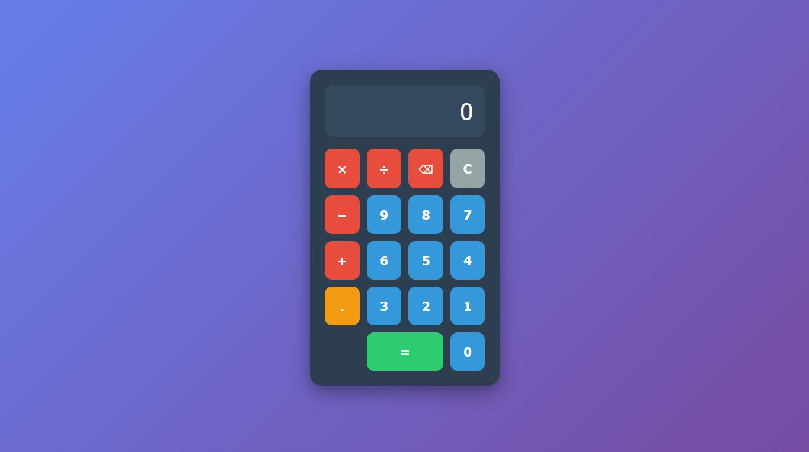
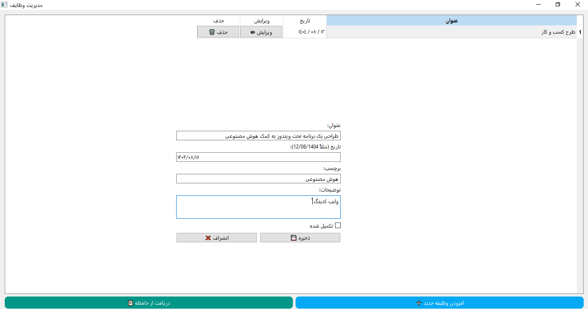

این روزها هوش مصنوعی از نگاه بسیاری از متخصصین و حتی مردم عادی دیگر یک امکان نیست بلکه یک ضرورت انکارناپذیر است. کاربردهای وسیع هوش مصنوعی و بویژه آخرین دستآوردهای آن ( هوش مصنوعی خلاق ) در حوزه های پیچیده مانند پزشکی یا مالی و فرآیندهای خلاقانه و فنی مانند برنامه نویسی هر روز بیشتر می شود.
آن روزها
اولین برنامه هوش مصنوعی را آرتور ساموئل در سال ۱۹۵۱ نوشت که یک بازی سادۀ چکرز بود. در سال ۱۹۵۶ زبان لیسپ ابداع شد که تا سالها ابزار اصلی در حوزه کد نویسی هوش مصنوعی بود. در دهه های ۱۹۶۰ و ۱۹۷۰، سیستمهای مبتنی بر قاعده (rule-based) برای کمک به برنامه نویسی توسعه داده شدند. اما نقطه عطف واقعی در این مسیر، ظهور مدلهای زبانی بزرگ (LLM) در دهه ۲۰۲۰ بود. ابزارهایی مانند GitHub Copilot (در سال ۲۰۲۱) بر پایه مدلهایی مانند Codex، توانستند با درک زمینه کد و با تکیه بر توضیحات به زبان طبیعی، به صورت گسترده به فرایند کدنویسی کمک کرده و کدنویسی هوشمند را در دسترس عموم قرار دهند.
بخاطر بیاورید که پیش از ظهور ابزارهای مبتنی بر هوش مصنوعی مانند GitHub Copilot، مجموعه ای از امکانات پایه در محیطهای توسعه یکپارچه (IDE) و ویرایشگرهای کد در دسترس برنامه نویسان قرار داشت. این ابزارهای سنتی عمدتاً بر پایه قوانین از پیش تعریفشده و تجزیه و تحلیل نحوی کد (Syntax) کار میکردند، مواردی مانند تکمیل خودکار کد (Code Autocomplete)، ریزکدها (Code Snippets)، برجسته کردن خطاهای نحوی (Syntax Error Highlighting) و پیشنهاد کد مبتنی بر نوع داده (Type-Aware Suggestions).
این ابزارها مفید بودند، اما بر دانسته های خود از کد موجود در پروژه یا قطعات کدی که کاربر به صورت دستی از پیش تعریف کرده بود، محدود میشدند و نمی توانستند هدف برنامه نویس را درک کرده یا کد کاملاً جدید بر اساس توضیحات کلامی خلق کنند. ظهور GitHub Copilot این فضا را دگرگون کرد. این ابزار صرفاً یک «دستیار هوشمند» نبود بلکه یک «برنامه نویس همکار» (AI pair programmer) محسوب می شد. امکانات این ابزار عبارتند بودند از تولید کد بر اساس توضیح کلامی، تکمیل هوشمند و پیشبینی کد، ادغام کامل با IDEهای محبوب، پشتیبانی از طیف گسترده ای از زبانها، امکانات پیشرفته مانند عامل کدنویسی (Coding Agent) که خودمختار محسوب شده و حتی قادر است یک مسئله ( issue ) یا خواسته جدید مطرح شده در گیت هاب را دریافت کرده و به طور مستقل تغییرات لازم را در کد اعمال کند.
در سال ۲۰۲۵ این مسیر تکاملی به اوج خود رسید و این پدیده جدید نامی تازه هم پیدا کرد، «وایب کدینگ» (Vibe Coding). آندری کارپاتی، دانشمند برجسته هوش مصنوعی، برای اولین بار در فوریه ۲۰۲۵ این اصطلاح را مطرح کرد. در این شیوه، تمرکز صرفاً بر «کمک به کدنویسی» نیست بلکه هدف اصلی، سرعت بخشیدن به فرآیند توسعه و امکانپذیر کردن ساخت نرم افزار برای افرادی است که لزوماً متخصص کدنویسی نیستند. در وایب کدینگ، برنامه نویس به جای نوشتن خط به خط کد، یک «حس» یا «وایب» کلی از آنچه میخواهد را به هوش مصنوعی منتقل میکند. این کار معمولاً از طریق یک چت بات یا یک محیط تعاملی صورت می پذیرد. ابتدا یک درخواست کلی مطرح شده، آنگاه مدل کدی را تولید کرده و در ادامه برنامه نویس با ارائه بازخورد یا درخواستهای بیشتر، فرآیند را چنان هدایت میکند که نتیجه مطلوب حاصل گردد. ابزارهای مهم و مؤثر دیگری هم در این عرصه عرضه شده اند، مانند Cursor ، Codeium و Trae AI که این مورد اخیر یک محیط توسعه یکپارچه مبتنی بر هوش مصنوعی با قابلیتهای متعدد است.
اما من قصد دارم در این نوشتار کوتاه یک تجربه عملی را با شما به اشتراک بگذارم. در این تجربه سعی کردم از ابزارهای سنتی فاصله زیادی نگیرم و همچنان فضا برای ظهور خلاقیتهای فردی که از جذابیتهای برنامه نویسی است را حفظ کنم. بنابراین بجای استفاده از ابزارهای یکپارچه جدید مانند Trae AI یا پلاگینهای توسعه یافته برای محیط های سنتی مانند GitHub Copilot در VS صرفاً از ابزارهای پایه و البته چت بات های رایگان و در دسترس مانند Qwen و Deepseek بهره بردم.
اغلب نویسندگان و مشاهیر دنیای برنامه نویسی توصیه کرده اند که یادگیری را با اجرای یک پروژه ساده همراه کنید، پروژه های ساده ای مانند پیاده سازی یک ماشین حساب، لیست کارها یا یک بازی ساده. بیایید با پیاده سازی یک ماشین حساب ادامه دهیم.
آغاز و پایان
در گام اول یک برنامه کاربردی تحت وب را به کمک زبان HTML و CSS و جاوا اسکریپت پیاده سازی می کنیم. برای این منظور از چت بات Qwen با پرامت زیر استفاده کردم. مدل Qwen3-Max یا Qwen3-coder مناسب اند( البته در زمان نوشتن این متن یعنی پائیز ۱۴۰۴ ). بهتر است مد را در حالت Web Dev بگذارید تا خروجی کد هم بصورت تعاملی و آنلاین قابل رؤیت باشد.
یک ماشین حساب با چهار عمل اصلی را در نظر بگیر و یک نمایشگر.
کلیدهای اعداد و عملگرها همانند کلیدهای استاندارد ماشین حساب عمل می کنند. کلید نقطه هم ممیز اعشار را مدیریت می کند. کلید مساوی حاصل آخرین عملیات را نشان می دهد. فشردن هر کلید عملگر بصورت ضمنی به معنای اجرای عملیات قبلی وآماده شدن برای عملیات جدید است.
برنامه را به زبان جاوا اسکریپت بنویس.
هر عدد دریافت شده از ورودی نباید بیشتر از 9 کارکتر باشد. خطاهایی مانند تقسیم بر صفر را مدیریت کن.
این دستور خروجی مانند کد زیر تولید می کند که بلافاصله پیش نمایش آن در صفحه ظاهر میشود:
<!DOCTYPE html>
<html lang="fa" dir="rtl">
<head>
<meta charset="UTF-8">
<meta name="viewport" content="width=device-width, initial-scale=1.0">
<title>ماشین حساب</title>
<style>
* {
margin: 0;
padding: 0;
box-sizing: border-box;
font-family: 'Vazirmatn', Tahoma, sans-serif;
}
body {
background: linear-gradient(135deg, #667eea 0%, #764ba2 100%);
min-height: 100vh;
display: flex;
justify-content: center;
align-items: center;
padding: 20px;
}
.calculator {
background: #2c3e50;
border-radius: 20px;
padding: 25px;
box-shadow: 0 10px 30px rgba(0, 0, 0, 0.4);
width: 320px;
max-width: 100%;
}
.display {
background: #34495e;
color: white;
font-size: 2.5rem;
text-align: left;
padding: 20px;
border-radius: 15px;
margin-bottom: 20px;
min-height: 80px;
overflow: hidden;
word-wrap: break-word;
direction: ltr;
text-align: right;
}
.buttons {
display: grid;
grid-template-columns: repeat(4, 1fr);
gap: 12px;
}
button {
border: none;
border-radius: 12px;
padding: 20px 0;
font-size: 1.3rem;
font-weight: bold;
cursor: pointer;
transition: all 0.2s ease;
outline: none;
}
button:hover {
transform: translateY(-2px);
box-shadow: 0 4px 8px rgba(0, 0, 0, 0.3);
}
button:active {
transform: translateY(0);
}
.number {
background: #3498db;
color: white;
}
.operator {
background: #e74c3c;
color: white;
}
.equals {
background: #2ecc71;
color: white;
grid-column: span 2;
}
.decimal {
background: #f39c12;
color: white;
}
.clear {
background: #95a5a6;
color: white;
}
@media (max-width: 360px) {
.calculator {
padding: 15px;
width: 280px;
}
.display {
font-size: 2rem;
padding: 15px;
}
button {
padding: 15px 0;
font-size: 1.1rem;
}
}
</style>
</head>
<body>
<div class="calculator">
<div class="display" id="display">0</div>
<div class="buttons">
<button class="clear" ="clearDisplay()">C</button>
<button class="operator" ="deleteLast()">⌫</button>
<button class="operator" ="inputOperator('/')">÷</button>
<button class="operator" ="inputOperator('*')">×</button>
<button class="number" ="inputNumber('7')">7</button>
<button class="number" ="inputNumber('8')">8</button>
<button class="number" ="inputNumber('9')">9</button>
<button class="operator" ="inputOperator('-')">−</button>
<button class="number" ="inputNumber('4')">4</button>
<button class="number" ="inputNumber('5')">5</button>
<button class="number" ="inputNumber('6')">6</button>
<button class="operator" ="inputOperator('+')">+</button>
<button class="number" ="inputNumber('1')">1</button>
<button class="number" ="inputNumber('2')">2</button>
<button class="number" ="inputNumber('3')">3</button>
<button class="decimal" ="inputDecimal()">.</button>
<button class="number" ="inputNumber('0')">0</button>
<button class="equals" ="calculate()">=</button>
</div>
</div>
let currentInput = '0';
let previousInput = '';
let operator = '';
let shouldResetInput = false;
const display = document.getElementById('display');
function updateDisplay() {
// Ensure the display doesn't exceed 9 characters
let displayText = currentInput;
if (displayText.length > 9) {
// Try to format as scientific notation if too long
if (displayText.includes('e') || displayText.includes('E')) {
displayText = parseFloat(displayText).toExponential(2);
} else {
try {
const num = parseFloat(displayText);
if (!isNaN(num)) {
displayText = num.toExponential(2);
}
} catch (e) {
displayText = displayText.substring(0, 9);
}
}
}
display.textContent = displayText;
}
function inputNumber(number) {
if (shouldResetInput) {
currentInput = '0';
shouldResetInput = false;
}
if (currentInput === '0' && number !== '.') {
currentInput = number;
} else if (currentInput.length < 9) {
currentInput += number;
}
updateDisplay();
}
function inputDecimal() {
if (shouldResetInput) {
currentInput = '0';
shouldResetInput = false;
}
if (!currentInput.includes('.') && currentInput.length < 9) {
currentInput += '.';
}
updateDisplay();
}
function inputOperator(op) {
if (operator && !shouldResetInput) {
calculate();
}
previousInput = currentInput;
operator = op;
shouldResetInput = true;
}
function calculate() {
if (operator === '' || shouldResetInput) return;
let result;
const prev = parseFloat(previousInput);
const current = parseFloat(currentInput);
if (isNaN(prev) || isNaN(current)) return;
switch (operator) {
case '+':
result = prev + current;
break;
case '-':
result = prev - current;
break;
case '*':
result = prev * current;
break;
case '/':
if (current === 0) {
result = 'Error';
} else {
result = prev / current;
}
break;
default:
return;
}
if (result !== 'Error') {
// Format result to fit within 9 characters
let resultStr = result.toString();
if (resultStr.length > 9) {
// Try to round to fit
if (Math.abs(result) >= 1e9 || (Math.abs(result) < 1e-4 && result !== 0)) {
resultStr = result.toExponential(2);
} else {
// Round to fit within 9 characters
const decimalPlaces = Math.max(0, 8 - Math.floor(Math.log10(Math.abs(result))));
resultStr = result.toFixed(decimalPlaces);
if (resultStr.length > 9) {
resultStr = result.toExponential(2);
}
}
}
currentInput = resultStr;
} else {
currentInput = result;
}
operator = '';
previousInput = '';
shouldResetInput = true;
updateDisplay();
}
function clearDisplay() {
currentInput = '0';
previousInput = '';
operator = '';
shouldResetInput = false;
updateDisplay();
}
function deleteLast() {
if (shouldResetInput) return;
if (currentInput.length === 1 || (currentInput.length === 2 && currentInput.startsWith('-'))) {
currentInput = '0';
} else {
currentInput = currentInput.slice(0, -1);
}
updateDisplay();
}
// Initialize display
updateDisplay();
</body>
</html>ممکن است تجربه شما کمی متفاوت باشد که اصلاً جای نگرانی نیست. می توانید برای بهبود خروجی با تغییر دستورات یا افزودن دستور اصلاحی به چت اقدام کنید. در نهایت کد را در قالب یک فایل با پسوند html ذخیره کرده و آنرا در یک مرورگر مانند کروم اجرا می کنیم. شاید تصویر زیر چیزی باشد که خواهید دید.

این تجربه را می توان با سایر چت بات هایی که از توسعه کد پشتیبانی می کنند هم تکرار کرد. اما بیایید کمی بازی را جذاب تر کنیم. اگر کمی در کدنویسی به زبان جاوا اسکریپت تجربه داشته باشید متوجه می شوید که کد حاصل را می توان حرفه ای تر و کارآمدتر کرد اینکار را هم می توان به هوش مصنوعی سپرد، بنابراین پرامت زیر را می نویسیم.
کد را بازنویسی کن و برای نوشتن handler هر یک از کلیدها از متد dataset attributes استفاده کن. به عنوان مثال :
<button class="clear" data-action="clear">C</button>
یا ساده تر می توانید تنها به حس یا اصطلاحاً وایب اشاره کنید و کار را به هوش مصنوعی بسپارید.
کد نوشته شده به زبان جاوا اسکریپت را با توجه به آخرین متدهای پیشرفته، بازنویسی ، بهینه و کوتاه کن.
نتیجه کار را می توانید در کادر زیر ببینید در این کد معماری شئ گرا برای توسعه بکارگرفته شده و کلاسی از اشیاء با عنوان ماشین حساب توسعه داده شده است که قابلیت استفاده مجدد و بسط آنرا افزایش می دهد.
class Calculator {
constructor() {
this.currentInput = '0';
this.previousInput = '';
this.operator = '';
this.shouldResetInput = false;
this.display = document.getElementById('display');
this.init();
}
init() {
document.querySelector('.buttons').addEventListener('click', (e) => {
if (e.target.tagName !== 'BUTTON') return;
const { action, value } = e.target.dataset;
this.handleAction(action, value);
});
this.updateDisplay();
}
handleAction(action, value) {
const handlers = {
number: () => this.inputNumber(value),
decimal: () => this.inputDecimal(),
operator: () => this.inputOperator(value),
equals: () => this.calculate(),
clear: () => this.clear(),
delete: () => this.deleteLast()
};
handlers[action]?.();
}
inputNumber(num) {
if (this.shouldResetInput) {
this.currentInput = '0';
this.shouldResetInput = false;
}
if (this.currentInput === '0' && num !== '.') {
this.currentInput = num;
} else if (this.currentInput.length < 9) {
this.currentInput += num;
}
this.updateDisplay();
}
inputDecimal() {
if (this.shouldResetInput) {
this.currentInput = '0';
this.shouldResetInput = false;
}
if (!this.currentInput.includes('.') && this.currentInput.length < 9) {
this.currentInput += '.';
}
this.updateDisplay();
}
inputOperator(op) {
if (this.operator && !this.shouldResetInput) this.calculate();
this.previousInput = this.currentInput;
this.operator = op;
this.shouldResetInput = true;
}
calculate() {
if (!this.operator || this.shouldResetInput) return;
const prev = parseFloat(this.previousInput);
const current = parseFloat(this.currentInput);
if (isNaN(prev) || isNaN(current)) return;
const operations = {
'+': prev + current,
'-': prev - current,
'*': prev * current,
'/': current === 0 ? 'Error' : prev / current
};
let result = operations[this.operator];
if (result !== 'Error') {
result = this.formatResult(result);
}
this.currentInput = result.toString();
this.operator = '';
this.previousInput = '';
this.shouldResetInput = true;
this.updateDisplay();
}
formatResult(result) {
let resultStr = result.toString();
if (resultStr.length <= 9) return result;
if (Math.abs(result) >= 1e9 || (Math.abs(result) < 1e-4 && result !== 0)) {
return result.toExponential(2);
}
const decimalPlaces = Math.max(0, 8 - Math.floor(Math.log10(Math.abs(result))));
resultStr = result.toFixed(decimalPlaces);
return resultStr.length > 9 ? result.toExponential(2) : parseFloat(resultStr);
}
clear() {
this.currentInput = '0';
this.previousInput = '';
this.operator = '';
this.shouldResetInput = false;
this.updateDisplay();
}
deleteLast() {
if (this.shouldResetInput) return;
if (this.currentInput.length <= 1 || (this.currentInput.length === 2 && this.currentInput.startsWith('-'))) {
this.currentInput = '0';
} else {
this.currentInput = this.currentInput.slice(0, -1);
}
this.updateDisplay();
}
updateDisplay() {
let displayText = this.currentInput;
if (displayText.length > 9 && displayText !== 'Error') {
displayText = this.formatResult(parseFloat(displayText));
}
this.display.textContent = displayText.toString();
}
}
new Calculator();
من برای این تجربه Qwen را انتخاب کردم چون علاوه بر اینکه بصورت رایگان در دسترس قرار دارد در مد Web dev امکان پیش نمایش کد حاصل را نیز بلافاصله فراهم میکند. همچنین می توانید کد تولید شده را ذیل دامنه qwen.ai به اشتراک بگذارید. این تجربه ساده می تواند شروع یک جهش بزرگ برای علاقمندان به برنامه نویسی بویژه نوجوانان و جوانان باشد. فراموش نکنیم که خواندن کدهای نوشته شده و تحلیل آن یکی از بهترین روشهای یادگیری و تعمیق دانسته های برنامه نویسان است.
اما همیشه مسئله به همین سادگی حل نمی شود. هر چقدر ساختار برنامه کاربردی نهایی پیچیده تر باشد شیوه طراحی پرامت نیز پیچیده تر می شود. بعلاوه چت باتها در اصلاح مکرر پاسخها هنوز محدودیتهای دارند بنابراین استفاده مستقیم از آنها گاهی اوقات کار را دشوار و نتیجه را دور از انتظار می کند. به همین دلیل ابزارهای اختصاصی برای این منظور توسعه داده شده است. بنابراین اگر قصد ساخت برنامه های کاربردی مفصل و پیچیده تری دارید بهتر است از ابزارهایی مانند Github Copilot یا Trea.ai استفاده کنید.
ساختار یک پرامت حرفه ای
برای داشتن یک خروجی مطلوب باید دستوراتی واضح و دقیق دارای ساختار استاندارد طراحی کرد. این کار خود یک تخصص حرفه ای است و امروزه به مهندسی پرامت مشهور شده است. ساختار یک پرامت مناسب برای کد نویسی معمولاً با توصیف هدف کلی پروژه آغاز میشود (مثلاً «ساخت یک برنامه مدیریت وظایف با رابط کاربری تعاملی»)، سپس به جزئیات عملکردها، ساختار دادهها و تعاملات کاربر پرداخته می شود. در ادامه باید فناوریها و فریمورکهای مورد استفاده (مانند React، Vue یا Node.js) بهوضوح مشخص شوند تا مدل در همان مسیر فنی پیش برود. ذکر لحن مورد انتظار کد (مثلاً ماژولار، دارای کامنت، یا بهینه برای مرورگرهای مدرن) و تعیین نحوه خروجی (یک فایل واحد، پروژه پوشهبندیشده یا فقط بخش خاصی از کد) نیز ضروری است. در نهایت، افزودن محدودیتها و معیارهای کنترل کیفیت مانند امنیت، سرعت بارگذاری یا قابلیت نگهداری. اگر به مبحث مهندسی پرامت و ساختار یک دستور حرفه ای علاقمندید مقالات بعدی را از دست ندهید.
در اینجا و صرفاً جهت آشنایی خواننده با مقدمه موضوع به اختصار به اجزاء یک پرامت مناسب برای کد نویسی اشاره می کنم.
تعریف نقش (Role): مشخص کردن دقیق تخصص و وظیفه مدل.
توصیف کلی پروژه (Project Overview): هدف اصلی برنامه و معرفی کاربران نهایی. چه مشکلی قرار است حل شود یا چه قابلیتهایی قرار است توسعه داده شود.
جزئیات عملکردی (Functional Requirements): فهرست قابلیتها و رفتارهای اصلی برنامه، تعاملات کاربر (ورود داده، کلیک، فیلتر، جستوجو و غیره)، نحوه نمایش و بهروزرسانی دادهها در رابط کاربری.
تکنولوژیها و فریمورکها (Tech Stack): زبانها و کتابخانهها (JavaScript, HTML, CSS) فریمورکهای پیشنهادی (React, Vue, Node.js, Express و غیره)، وابستگیها یا APIهای خارجی مورد نیاز.
ساختار کد و سازمان پروژه (Code Structure): نحوه تقسیمبندی فایلها و پوشهها، معماری کلی (Component-Based, MVC, SPA و…)، استانداردهای کدنویسی (ماژولار، دارای کامنت، استفاده از ES6+).
خروجی مورد انتظار (Expected Output): نوع خروجی (کد کامل پروژه، فقط بخش خاصی مثل UI یا API)، قالب تحویل خروجی (یک فایل، پوشه پروژه بصورت فشرده، یا بلوک کد)، سطح جزئیات مورد انتظار (کد خام یا همراه با توضیحات).
محدودیتها و معیارهای کیفیت (Constraints & Quality Criteria): عملکرد و سرعت بارگذاری، امنیت و اعتبارسنجی دادهها، قابلیت نگهداری و توسعه در آینده.
ادامه بازی
بد نیست یک مثال حرفه ای را هم با هم ببینیم. فرض کنید می خواهیم یک برنامه دسکتاپ برای مدیریت وظایف طراحی کنید. پرامت زیر می تواند یک نمونه مناسب باشد.
توصیف کلی پروژه (Project Overview):
میخواهم یک برنامه دسکتاپ مدیریت وظایف (ToDo List) برای سیستمعامل ویندوز بسازم.
کاربر بتواند وظایف خود را اضافه، ویرایش و حذف کرده و کارهای انجام شده را بتواند علامتگذاری کند.
رابط کاربری برنامه باید راستبهچپ و کاملاً فارسی باشد.جزئیات عملکردی (Functional Requirements):
افزودن، ویرایش، حذف و علامتگذاری وظایف
نمایش لیست وظایف در یک جدول یا لیست گرافیکی
امکان ذخیره خودکار دادهها (مثلاً در فایل JSON یا SQLite)
قابلیت جستوجو یا فیلتر وظایف بر اساس وضعیت انجامشده
پیغامهای خطا و هشدار به زبان فارسی
تکنولوژیها و فریمورکها (Tech Stack):
زبان برنامهنویسی: Python 3.x
رابط کاربری: Tkinter یا PyQt5 / PySide6 (ترجیحاً با طراحی زیبا و مدرن)
پایگاه داده: SQLite یا فایل JSON برای ذخیره وظایف
ساختار کد و سازمان پروژه (Code Structure):
پروژه باید ماژولار و پوشهبندیشده باشد.
خروجی مورد انتظار (Expected Output):
خروجی باید پروژه کامل و قابل اجرا باشد.
در پایان، راهنمای ساخت فایل exe مستقل با pyInstaller ارائه شود.
فایل نهایی بتواند بدون نیاز به پایتون در ویندوز اجرا گردد.
محدودیتها و معیارهای کیفیت (Constraints & Quality Criteria):
رابط کاربری فارسی، راستبهچپ (RTL) و با فونت خوانا
طراحی گرافیکی زیبا و مدرن (استفاده از رنگهای هماهنگ و دکمههای مینیمال)
عملکرد سریع و روان
کدنویسی خوانا با توضیحات و کامنتهای فارسی یا انگلیسی
تصویر زیر حاصل تجربه پرامت فوق با استفاده از ChatGPT است. برنامه را در حالیکه روی گزینه «افزودن وظایف جدید» کلیک شده و فرم آن باز شده است مشاهده می کنید.

صفحه اصلی برنامه مدیریت وظایف نوشته شده با پایتون ( فرم افزودن وظیفه جدید با شده است )
عیب وایراد
وایب کدینگ علیرغم جذابیتها و تواناییهای چشمگیرش، محدودیتهایی نیز دارد. برای نمونه، هرچند این رویکرد فرایند کدنویسی را به تجربهای تعاملی، الهامبخش و خلاقانه تبدیل میکند، اما همچنان به ابزارهای هوش مصنوعی و مدلهای زبانی وابسته است و ممکن است درک عمیقی از منطق تجاری یا ساختارهای پیچیده نرمافزار نداشته باشند. از طرف دیگر، کیفیت خروجی تا حد زیادی به وضوح و دقت دستورات کاربر بستگی دارد، و در صورت بیان مبهم یا نادرست، نتایج نیز ممکن است ناقص یا غیرکاربردی باشند. همچنین، وایب کدینگ هنوز جایگزین کاملی برای تجربهی فنی یک برنامهنویس حرفهای نیست و برای پروژههای بزرگ یا نیازمند بهینهسازی بالا، به دخالت انسانی نیاز دارد. بهعبارتی، این روش در حال حاضر بیش از آنکه یک جایگزین کامل باشد، ابزاری کمکی و الهامبخش در مسیر توسعه نرمافزار بهشمار میآید.
در پروژههای پیچیده که شامل چندین ماژول و وابستگیهای متقابل است، احتمال دارد مدل در هماهنگ نگهداشتن اجزای مختلف یا درک تغییرات پیدرپی دچار ناهماهنگی شود. همچنین، در فرآیند اصلاحات مکرر و طولانی—وقتی کاربر بارها دستورات جدید برای ویرایش یا بهبود کد ارائه میکند—ممکن است کد تولیدشده تدریجاً از انسجام اولیه خود فاصله گرفته و به بازسازی کلی نیاز پیدا کند. بنابراین، هرچند وایب کدینگ ابزاری قدرتمند برای تسریع و سادهسازی تولید نرمافزار است، اما برای حفظ کیفیت و پایداری در پروژههای واقعی همچنان به نظارت و قضاوت انسانی نیاز دارد.
از آینده چه خبر
وایب کدینگ همانند سایر مباحث مرتبط با هوش مصنوعی خلاق به سرعت رو به رشد و تحول است. جدیدترین دستاوردهای این حوزه در سالهای اخیر، شامل معماریهای چندعاملی، استفاده از سامانههای تعاملی برای تفسیر اهداف عملکردی و سبک برنامهنویسی مورد نظر کاربر و بهکارگیری حلقههای بازخورد تعاملی است. حلقه های بازخوردی که به وسیله آن خروجی کد به طور مستمر ارزیابی و اصلاح میشود. تحقیقات جدید، افزایش بهرهوری و دموکراتیکترکردن توسعه نرمافزار را بهعنوان پیامدهای مثبت گزارش کردهاند، اما چالشهایی نظیر همسویی دقیق با اهداف کاربر، قابلیت بازتولید کد نوشته شده، رفع سوگیری مدل، تبیینپذیری کد، نگهداشت و امنیت آن همچنان باقی است. آینده این حوزه مشارکت هوشمند انسان و ماشین، طراحی ابزارهای شفاف و قابل اعتماد، و کاربرد این روش در پروژههای پیچیدهتر با تاکید بر نظارت انسانی و رویکردهای مسئولانه است، همچنین در مباحثی مانند ارتقای قابلیت همزمانسازی، تفسیر معنایی و حفظ انسجام کد پژوهشها همچنان ادامه دارد.